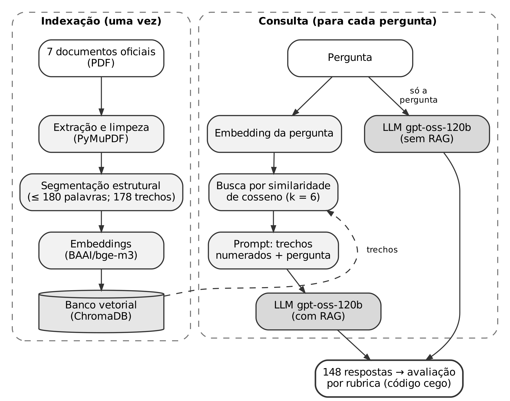

Este material ensina, passo a passo, a construir um assistente que responde perguntas com base em um conjunto de documentos, usando a técnica de Geração Aumentada por Recuperação (Retrieval-Augmented Generation – RAG). O exemplo usado do início ao fim é o de documentos acadêmicos da UESPI: calendário, editais, projeto pedagógico e tutoriais do SIGAA. O código é o de um projeto real, desenvolvido como Trabalho de Conclusão de Curso, em que o mesmo modelo de linguagem passou de 3,5% para 82,5% de respostas corretas nas perguntas institucionais ao receber os trechos certos dos documentos.
Público. Estudantes de cursos de computação com noções básicas de Python (funções, listas, dicionários e leitura de arquivos). Não é preciso conhecimento prévio de inteligência artificial.
Como usar. Leia os capítulos em ordem e rode os exemplos. Todo o código está no arquivo docs/material/codigo/mini_rag.py do repositório github.com/Enzox22/rag-uespi, uma versão didática, em um único arquivo, do sistema completo. Os exercícios do Capítulo 9 têm gabarito no Capítulo 10.
Um Grande Modelo de Linguagem (Large Language Model – LLM) é uma rede neural treinada com enormes volumes de texto para prever a próxima palavra (mais precisamente, o próximo token) de uma sequência. Os LLMs atuais usam a arquitetura Transformer, cujo mecanismo de autoatenção relaciona cada palavra com todas as outras do texto (VASWANI et al., 2017). Treinados em escala, eles respondem perguntas, resumem e explicam conteúdos sem treinamento específico para cada tarefa.
O conhecimento de um LLM, porém, fica limitado aos dados vistos no treinamento, até uma data de corte. Informações locais e que mudam com frequência, como o calendário de um semestre ou as regras de um edital, em geral não estão lá. Diante de uma pergunta assim, o modelo tende a produzir uma resposta plausível, mas inventada. Esse fenômeno é chamado de alucinação: conteúdo sem sustentação na fonte ou nos fatos, apresentado com a mesma fluência de um conteúdo correto (JI et al., 2023; HUANG et al., 2025).
Treinar de novo o modelo a cada semestre seria caro e lento. A solução mais usada é outra: entregar ao modelo, no momento da pergunta, os trechos dos documentos que contêm a resposta. É isso que o RAG faz.
A Geração Aumentada por Recuperação foi proposta por Lewis et al. (2020) e combina duas partes: um componente de recuperação, que busca trechos relevantes em uma base de documentos, e um componente de geração, o LLM, que escreve a resposta a partir desses trechos. Na forma mais comum, chamada de RAG ingênua (GAO et al., 2024), o processo tem duas fases, mostradas na Figura 1.

A qualidade final depende das duas pontas: se a busca não traz o trecho certo, o modelo não tem de onde tirar a resposta; se traz, o modelo ainda precisa interpretá-lo corretamente. Por isso, os capítulos a seguir tratam cada etapa separadamente, e o Capítulo 8 mostra como avaliar a busca.
Você vai precisar do Python 3.10 ou mais recente. Crie um ambiente virtual e instale as bibliotecas:
python -m venv .venv
# Windows: .venv\Scripts\activate Linux/macOS: source .venv/bin/activate
pip install pymupdf sentence-transformers chromadb numpy openai| Biblioteca | Para que serve |
|---|---|
pymupdf | Ler o texto de arquivos PDF |
sentence-transformers | Gerar embeddings com o modelo BAAI/bge-m3 (CHEN et al., 2024) |
chromadb | Banco vetorial: guarda os vetores e faz a busca por similaridade |
numpy | Operações com vetores |
openai | Cliente para chamar o LLM; a API da Groq usa a mesma interface |
O modelo de linguagem usado é o gpt-oss-120b, de pesos abertos, acessado pela API da Groq, que tem plano gratuito. Crie uma conta em console.groq.com, gere uma chave e guarde-a em uma variável de ambiente:
# Windows (PowerShell)
$env:GROQ_API_KEY = "sua-chave-aqui"
# Linux/macOS
export GROQ_API_KEY="sua-chave-aqui".env, que está listado no .gitignore para não ser publicado.Na primeira execução, o modelo de embeddings (cerca de 2,3 GB) é baixado automaticamente. Para testar o código sem baixá-lo, todos os comandos aceitam a opção --teste, que usa um embedder simplificado (veja o Capítulo 6).
O primeiro passo é transformar cada PDF em texto. A biblioteca PyMuPDF lê o texto página por página. Em seguida, fazemos uma limpeza básica: trocamos ligaduras tipográficas (o caractere único "fi" vira "fi"), juntamos espaços repetidos e descartamos linhas que são só números de página.
def extrair_texto(caminho_pdf: str) -> str:
"""Lê o texto de todas as páginas de um PDF e faz uma limpeza básica."""
import pymupdf
linhas = []
with pymupdf.open(caminho_pdf) as doc:
for pagina in doc:
for linha in pagina.get_text("text").splitlines():
linha = re.sub(r"\s+", " ", linha.replace("fi", "fi").replace("fl", "fl")).strip()
if linha and not re.fullmatch(r"\d{1,3}", linha): # descarta nº de página
linhas.append(linha)
return "\n".join(linhas)Na prática, a extração automática é só o começo. No projeto real, foi preciso: remover cabeçalhos e rodapés que se repetiam em todas as páginas (o módulo rag/extracao.py faz isso contando as linhas repetidas nas bordas); transcrever à mão o texto de imagens, como prints de tela do SIGAA, que a PyMuPDF não lê; e organizar o texto em seções, cada uma iniciada por ## , como um evento do calendário ou um item do edital.
Um documento inteiro é grande demais para ser comparado com uma pergunta curta e para caber no prompt. Por isso ele é dividido em trechos (chunks). O tamanho do trecho é uma escolha importante:
A função abaixo junta parágrafos até chegar perto de um limite de palavras. Um parágrafo maior que o limite é cortado em partes.
def dividir_em_trechos(texto: str, maximo: int = MAX_PALAVRAS) -> list[str]:
"""Junta parágrafos até chegar perto de `maximo` palavras por trecho."""
trechos, atual = [], []
for paragrafo in texto.split("\n"):
palavras = paragrafo.split()
if not palavras:
continue
if atual and len(atual) + len(palavras) > maximo:
trechos.append(" ".join(atual))
atual = []
atual.extend(palavras)
while len(atual) > maximo: # parágrafo gigante: corta no limite
trechos.append(" ".join(atual[:maximo]))
atual = atual[maximo:]
if atual:
trechos.append(" ".join(atual))
return trechosNo projeto real, a divisão segue a estrutura de cada documento: cada seção ## vira um trecho, e só as seções com mais de 180 palavras são subdivididas, repetindo o título da seção em cada parte (rag/chunking.py). Isso evita que um evento do calendário seja separado da sua data. Durante o desenvolvimento, reduzir o limite de 350 para 180 palavras e aumentar o número de trechos recuperados de 4 para 6 elevou a taxa de acerto da busca de 82,4% para 89,7%.
"Calendário Acadêmico | 10/08/2026 – Início das aulas"). Isso ajuda a busca a encontrar o documento certo.Um embedding é um vetor de números que representa o significado de um texto. Textos com sentido parecido ficam com vetores próximos, mesmo que usem palavras diferentes: "quando começam as aulas?" fica perto de "início do período letivo". O modelo BAAI/bge-m3 (CHEN et al., 2024), usado no projeto, gera vetores de 1.024 dimensões e funciona bem em português.
A proximidade entre dois vetores é medida pela similaridade de cosseno, que vai de −1 a 1 (quanto maior, mais parecidos):
cos(a, b) = (a · b) / (‖a‖ × ‖b‖)
Quando os vetores são normalizados (comprimento 1), o denominador vale 1 e a similaridade é apenas o produto escalar. Por isso o código pede normalize_embeddings=True:
class Embedder:
def __init__(self, teste: bool = False):
self.teste = teste
if not teste:
from sentence_transformers import SentenceTransformer
self.modelo = SentenceTransformer(MODELO_EMBEDDINGS)
def codificar(self, textos: list[str]) -> np.ndarray:
if self.teste:
return np.vstack([embedding_teste(t) for t in textos])
return self.modelo.encode(textos, normalize_embeddings=True)O banco vetorial guarda os vetores e encontra rapidamente os mais próximos de um vetor de consulta. Usamos o ChromaDB, configurado para a distância de cosseno. A indexação lê todos os PDFs de uma pasta, divide em trechos, gera os vetores e grava tudo:
def indexar(pasta_pdfs: str, embedder: Embedder) -> None:
ids, textos, fontes = [], [], []
for pdf in sorted(Path(pasta_pdfs).glob("*.pdf")):
for n, trecho in enumerate(dividir_em_trechos(extrair_texto(str(pdf))), 1):
ids.append(f"{pdf.stem}-{n:03d}")
textos.append(trecho)
fontes.append({"documento": pdf.stem})
vetores = embedder.codificar([f"{f['documento']} | {t}" for f, t in zip(fontes, textos)])
colecao(recriar=True).add(ids=ids, documents=textos, metadatas=fontes,
embeddings=[list(map(float, v)) for v in vetores])python mini_rag.py indexar pasta_dos_pdfs/--teste. O embedder de teste apenas conta palavras (com uma técnica chamada hashing), sem entender significado. Ele serve para verificar se o código roda, mas acerta bem menos: "início das aulas" e "começam as aulas" quase não se parecem para ele. Use sempre o modelo real para resultados de verdade.Na consulta, a pergunta passa pelo mesmo modelo de embeddings e o banco devolve os k trechos mais próximos. O ChromaDB devolve a distância de cosseno; a similaridade é 1 menos a distância.
def buscar(pergunta: str, embedder: Embedder, k: int = K) -> list[dict]:
vetor = embedder.codificar([pergunta])[0]
r = colecao().query(query_embeddings=[list(map(float, vetor))], n_results=k)
return [{"id": r["ids"][0][i],
"documento": r["metadatas"][0][i]["documento"],
"texto": r["documents"][0][i],
"similaridade": round(1 - r["distances"][0][i], 3)}
for i in range(len(r["ids"][0]))]Em seguida, os trechos são numerados e colocados no prompt, junto com instruções claras: basear-se nos trechos, admitir quando não souber e indicar a fonte.
INSTRUCOES = ("Você é um assistente que responde dúvidas de estudantes universitários. "
"Responda em português, de forma objetiva. Baseie sua resposta nos trechos "
"fornecidos. Se a informação não estiver nos trechos, diga claramente que "
"não sabe. Indique a fonte da informação.")
def montar_mensagens(pergunta: str, trechos: list[dict]) -> list[dict]:
blocos = "\n\n".join(f"[{n}] Fonte: {t['documento']}\n{t['texto']}"
for n, t in enumerate(trechos, 1))
return [{"role": "system", "content": INSTRUCOES},
{"role": "user", "content": f"Trechos de documentos:\n\n{blocos}\n\nPergunta: {pergunta}"}]Por fim, as mensagens são enviadas ao LLM. A temperatura 0 deixa as respostas mais estáveis, o que é importante para comparar resultados.
def gerar_resposta(mensagens: list[dict]) -> str:
from openai import OpenAI # a Groq usa a mesma interface da OpenAI
cliente = OpenAI(api_key=os.environ["GROQ_API_KEY"], base_url="https://api.groq.com/openai/v1")
r = cliente.chat.completions.create(model=MODELO_LLM, messages=mensagens,
temperature=0, max_tokens=2000)
return r.choices[0].message.contentpython mini_rag.py perguntar "Quando começam as aulas do período letivo 2026.2?"
python mini_rag.py perguntar "..." --sem-llm # mostra só a busca e o promptAvaliar um sistema RAG exige separar a qualidade da busca da qualidade da resposta (ES et al., 2024). Para a busca, monte uma lista de perguntas e, para cada uma, anote qual é o trecho do documento que contém a resposta (o trecho-fonte). Depois, verifique em que posição esse trecho aparece entre os k recuperados.
Proporção de perguntas em que o trecho-fonte aparece entre os k trechos recuperados:
Recall@k = (nº de perguntas com o trecho-fonte entre os k primeiros) / (nº total de perguntas)
Média do inverso da posição do trecho-fonte. Se ele vem em 1º lugar, a pergunta vale 1; em 2º, vale 1/2; em 3º, 1/3; se não foi recuperado, vale 0. O MRR mostra não só se o trecho foi encontrado, mas se ele apareceu no topo.
MRR = (1/N) × Σ (1 / posiçãoi)
| Pergunta | Posição do trecho-fonte (k = 6) | Entre os 6? | 1 / posição |
|---|---|---|---|
| P1 | 1º | Sim | 1 |
| P2 | 3º | Sim | 0,333 |
| P3 | não recuperado | Não | 0 |
| P4 | 2º | Sim | 0,5 |
| Resultado | Recall@6 = 3/4 = 75% | MRR = 1,833 / 4 = 0,458 |
No projeto real, com 68 perguntas, o resultado foi Recall@6 de 91,2% e MRR de 0,761. Para a qualidade das respostas, usou-se uma rubrica aplicada por avaliadores humanos, com critérios de acurácia, completude, alucinação, rastreabilidade (indicação da fonte) e abstenção. A avaliação humana é a referência quando métricas automáticas não conseguem verificar se uma informação é verdadeira (CHANG et al., 2024).
Explique, com suas palavras, por que um LLM sem acesso aos documentos tende a errar a pergunta "Quando começam as aulas do período letivo 2026.2 na UESPI?", mas acerta "O que é um estágio curricular?".
Um texto tem três parágrafos, com 100, 50 e 400 palavras, nessa ordem. Usando a função dividir_em_trechos com maximo = 180, quantos trechos são gerados e com quantas palavras cada um?
Calcule a similaridade de cosseno entre os vetores a = (1, 0) e b = (0,6; 0,8). Os dois vetores estão normalizados? O que isso permite simplificar no cálculo?
Em cinco perguntas, o trecho-fonte apareceu nas posições: 2º, não recuperado, 1º, 1º e 5º (com k = 6). Calcule o Recall@6 e o MRR.
Rode o mini_rag.py com K = 3 e depois com K = 10. Que vantagem e que desvantagem você espera em cada caso?
Faça a mesma pergunta com e sem a opção --teste e compare os trechos recuperados. Por que o embedder de teste costuma recuperar trechos piores?
No projeto, o modelo respondeu "outubro de 2026" quando o documento dizia "07/10/2026". Reescreva a constante INSTRUCOES para reduzir esse tipo de imprecisão.
Exercício 1. As datas do calendário de 2026 são informação local, específica da UESPI e recente: provavelmente não estavam nos dados de treinamento, então o modelo inventa uma data plausível (alucinação). Já o conceito de estágio curricular é geral e aparece em muitos textos públicos, por isso faz parte do conhecimento do modelo. No projeto, sem RAG, o modelo acertou 3,5% das perguntas institucionais e 63,6% das de conceito geral.
Exercício 2. Quatro trechos, com 150, 180, 180 e 40 palavras. Os dois primeiros parágrafos se juntam (100 + 50 = 150). O terceiro não cabe no trecho atual (150 + 400 > 180), então o trecho de 150 é fechado; o parágrafo de 400 palavras é cortado em 180 + 180, e sobram 40 palavras no último trecho.
Exercício 3. O produto escalar é 1 × 0,6 + 0 × 0,8 = 0,6. Os comprimentos são ‖a‖ = 1 e ‖b‖ = √(0,36 + 0,64) = 1, então os dois estão normalizados e a similaridade é 0,6 / (1 × 1) = 0,6. Com vetores normalizados, basta calcular o produto escalar.
Exercício 4. O trecho-fonte foi recuperado em 4 das 5 perguntas: Recall@6 = 4/5 = 80%. MRR = (1/2 + 0 + 1 + 1 + 1/5) / 5 = 2,7 / 5 = 0,54.
Exercício 5. Com k = 3, o prompt fica menor e mais focado, mas aumenta a chance de o trecho certo ficar de fora (menor Recall). Com k = 10, o trecho certo aparece com mais frequência, mas o prompt fica maior (mais custo e tempo) e traz mais trechos irrelevantes, que podem confundir o modelo (SHI et al., 2023). No projeto, k = 6 foi um bom equilíbrio.
Exercício 6. O embedder de teste só considera palavras iguais: perguntas e trechos que dizem a mesma coisa com palavras diferentes ("começam as aulas" e "início do período letivo") parecem distantes. O modelo bge-m3 representa o significado, então aproxima textos equivalentes mesmo sem palavras em comum.
Exercício 7. Uma resposta possível: acrescentar às instruções "Ao informar datas, prazos ou valores, copie-os exatamente como aparecem no trecho, no formato original (por exemplo, 07/10/2026), sem arredondar ou resumir". Outras soluções válidas incluem pedir que o modelo cite o trecho usado entre aspas.
CHANG, Yupeng et al. A survey on evaluation of large language models. ACM Transactions on Intelligent Systems and Technology, v. 15, n. 3, p. 1-45, 2024.
CHEN, Jianlyu et al. M3-Embedding: multi-linguality, multi-functionality, multi-granularity text embeddings through self-knowledge distillation. In: FINDINGS OF THE ASSOCIATION FOR COMPUTATIONAL LINGUISTICS: ACL 2024. Proceedings [...]. Bangkok: ACL, 2024. p. 2318-2335.
ES, Shahul et al. RAGAS: automated evaluation of retrieval augmented generation. In: CONFERENCE OF THE EUROPEAN CHAPTER OF THE ASSOCIATION FOR COMPUTATIONAL LINGUISTICS: SYSTEM DEMONSTRATIONS, 18., 2024, St. Julian's. Proceedings [...]. St. Julian's: ACL, 2024. p. 150-158.
GAO, Yunfan et al. Retrieval-augmented generation for large language models: a survey. arXiv, 2024. Disponível em: https://arxiv.org/abs/2312.10997.
HUANG, Lei et al. A survey on hallucination in large language models: principles, taxonomy, challenges, and open questions. ACM Transactions on Information Systems, v. 43, n. 2, p. 1-55, 2025.
JI, Ziwei et al. Survey of hallucination in natural language generation. ACM Computing Surveys, v. 55, n. 12, p. 1-38, 2023.
LEWIS, Patrick et al. Retrieval-augmented generation for knowledge-intensive NLP tasks. In: CONFERENCE ON NEURAL INFORMATION PROCESSING SYSTEMS, 34., 2020. Advances in Neural Information Processing Systems 33. Red Hook: Curran Associates, 2020. p. 9459-9474.
SHI, Freda et al. Large language models can be easily distracted by irrelevant context. In: INTERNATIONAL CONFERENCE ON MACHINE LEARNING, 40., 2023, Honolulu. Proceedings [...]. [S. l.]: PMLR, 2023. v. 202, p. 31210-31227.
VASWANI, Ashish et al. Attention is all you need. In: CONFERENCE ON NEURAL INFORMATION PROCESSING SYSTEMS, 31., 2017, Long Beach. Advances in Neural Information Processing Systems 30. Red Hook: Curran Associates, 2017. p. 5998-6008.